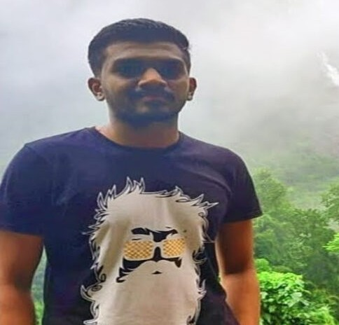

Shivanand Kundargi
Research Assistant at IIT-Hyderabad

I am a computer vision researcher. In a quest towards imbibing Human-Psychological behaviour into Machines, My research is mainly in the areas of continual learning, class-discovery, open-world learning.
I am currently a research assistant at IIT Hyderabad under the guidance of Dr. Vineeth N Balasubramanian. Previously I woked under the guidance of Dr. Uma Mudengudi as an undergraduate researcher
e-mail: shivanand.kundargi@cse.iith.in or shivanandkundargi992@gmail.com
News
| Nov 1, 2023 | My internship work under Dr.Uma Mudengudi "Novel Class Discovery for Representation of Real-World Heritage Data as Neural Radiance Fields" accepted at AAAI-2024 student abstarct and poster program |
| October 15, 2023 | Our Dataset Paper in collabpration with Dr. Shivanand Sheshappanavar "A Benchmark Grocery Dataset of Realworld Point Clouds from Single View" accepted at 3DV 2024. |
| April 14, 2022 | Joined Dr. Vineeth N Balasubramanian at IIT-Hyderabad as a Research Assistant |
| April 26, 2023 | Our Paper "PointCLIMB: An Exemplar-Free Point Cloud Class Incremental Benchmark" accepted at CLVision workshop, CVPR-2023 . |
| Nov 14, 2022 | Our methodology which secured 12th Position on Leaderbord for object detection challenge on seadronessee dataset published at MaCVi Workshop, WACV 2023 . |
| April 14, 2022 | Started My internship at ,Bosch Global Software Technologies |